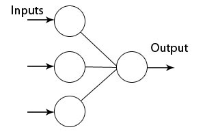

Adaline (ADAptive LInear NEuron) is simple two-layer neural network with only input and output layer, having a single output neuron.Output neuron receives input from all input neurons. All neurons in network have linear transfer functions (y = kx+n), and network use Least Mean Squares (LMS) algorithm for learning. This network can be used to recognize patterns, data filtering, or to approximate linear function. Note that this network can be applied only to linear problems.

To create and train Adaline neural network using Neuroph Studio do the following:
Step 1. Create new Neuroph project
In main menu Click File -> New Project
In New Project dialog select Neuroph category, then select Neuroph Project and click Next.

Enter name and location for project, click Finish.

Step 2. Create Adaline network.
To create new Adaline network in main menu click File -> New File.

Select your project from drop-down menu, select Neuroph category and choose Neural Network file type, click Next.

Enter neural network name and select neural network type, click Next.

Enter number of neurons in input layer (number of inputs)

This will create the Adaline neural network with three neurons in input and one in output layer. Note that third neuron in input layer is so called bias, or internal input (always outputs 1).By default, all neurons will have Linear transfer functions.

Now we shall train this simple network, to learn from data. First we have to create the training set
Step 3. To create training set click File -> New File.
Select your project from drop-down menu, select Neuroph category and choose Data Set file type, click Next.

In the new training set dialog, Enter training set name, choose Supervised type of training set from drop down list. Then enter number of inputs (2) and outputs (1) as shown on picture click Finishbutton.

Then create training set by entering values for training elements. Use Add row button to add new elements, and click OK button when done.

Step 4. To start network training procedure, drag n' drop training set to corresponding field in the network window, and 'Train' button will become enabled in toolbar. Click the 'Train' button to open Set Learning Parameters dialog.

In Set Learning parameters dialog change default learning parameters. Set 0.00001 instead of 0.01 for Max error. Leave the Display Error Graph box checked, and just click the Train button.

Training stopped after 18 iterations, with acceptable net error. Learning is shown on the picture below. Note that number of iterations may vary, depending on initial weights which are randomly initialised.

Step 5. After the training is complete, you can test the network for the whole training set by drag n'drop data set to test, and clicking Test button in toolbar. Results for every input will be shown in Test Results window.


To test network for single input click Set In button in the toolbar. This opens Set Network Input dialog in which you can enter input values for network separated with white space.
Note: Input that vector size must match with network input dimension.

The result of network test is shown on the picture below. We can see that network has learned the provided data, since the value of output neuron is 0.31 which is approximately to the desired output specified in training set 0.3

You can turn on the display of activation levels and connection weights, or zoom network with ctrl+mousewheel.
You can use command buttons in toolbar to inspect the network behaviour. SetIn to set network input, Calculate to perform calculation for whole network, Reset to reset activation levels for all neurons to zero, and Randomize to randomize all network weights.

To learn more about the Adaline see: